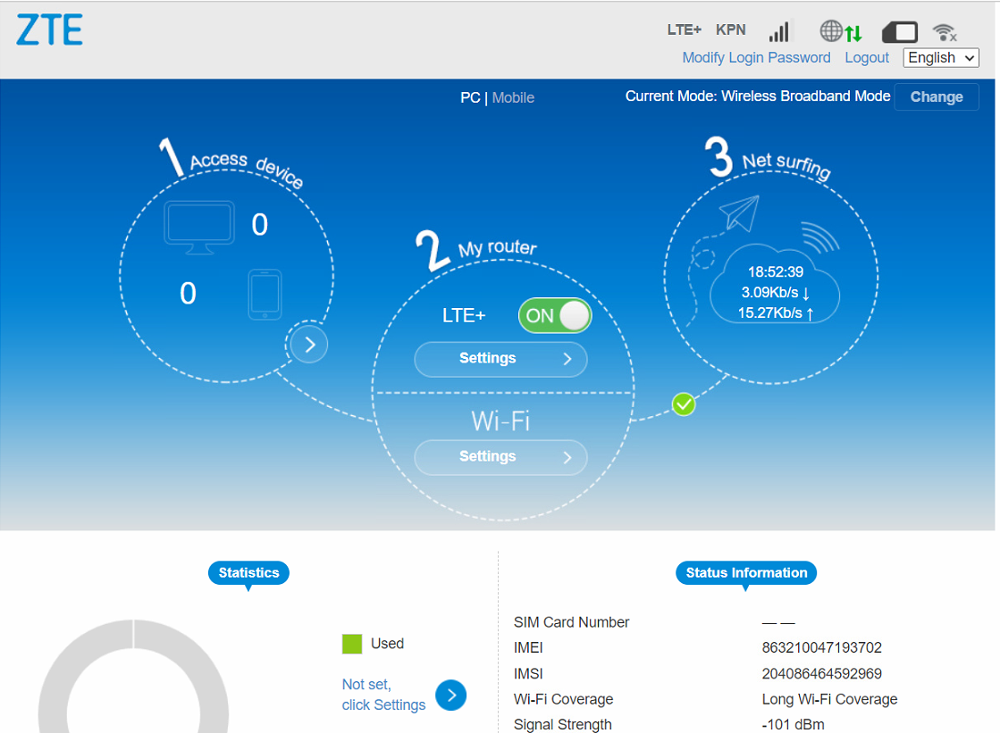

Fortigate testomgeving
Dit zijn de relevante gegevens voor de PAP16test-omgeving:
| Extern IP-nr | Intern IP-nr | Wat |
|---|---|---|
| 92.69.124.92 | 10.20.30.1 | 4g |
| 92.69.118.171 | 192.168.101.186 | glas |
De glasverbinding is in werkelijkheid een 4g-modem.
Er zijn 3 manieren om de pap16test-fg01 te benaderen:
https://92.69.124.92:4444 PAP16test-fg01 buitenom modem 1
https://92.69.118.171:4444 Pap16test-fg01 buitenom 4G modem 2
https://pap16test-fg01.montapacking.nl:4444/ Pap16test-fg01 binnendoor (via mgmt-loopback-adres) (alleen vanaf server in het LAN)
Je kunt altijd inloggen met het account fallback uit Passwordstate
Je kunt ook inloggen met voornaam.achternaam en AD-wachtwoord.
In teamviewer is “Papland IT-Fortigate-testpc-4G-modem” een laptop die aan het 4G-modem 2 hangt.
Als je op deze laptop inlogt is het 4G modem te benaderen via : \http://192.168.101.1/index.html#login (ww=passwrdstate)\
Om te testen wat er gebeurt als er een verbinding wegvalt kun je even het schuifje bij LTE_ uitzetten.

In teamviewer is "Papland IT-Fortigate-testPC (MONPC1313)" een PC die hangt achter een switch in het pap16 testnetwerk. DUO nodig om in te loggen.
Op deze PC kun je bijvoorbeeld internet testen en de VPN door bijvoorbeeld https://rest.monta.nl/v0 te benaderen.
Als je met whatismyip wilt zien over welke 4G modem je het internet op gaat kan het nodig zijn de browser opnieuw te starten omdat je anders door caching een verkeerd beeld krijgt.